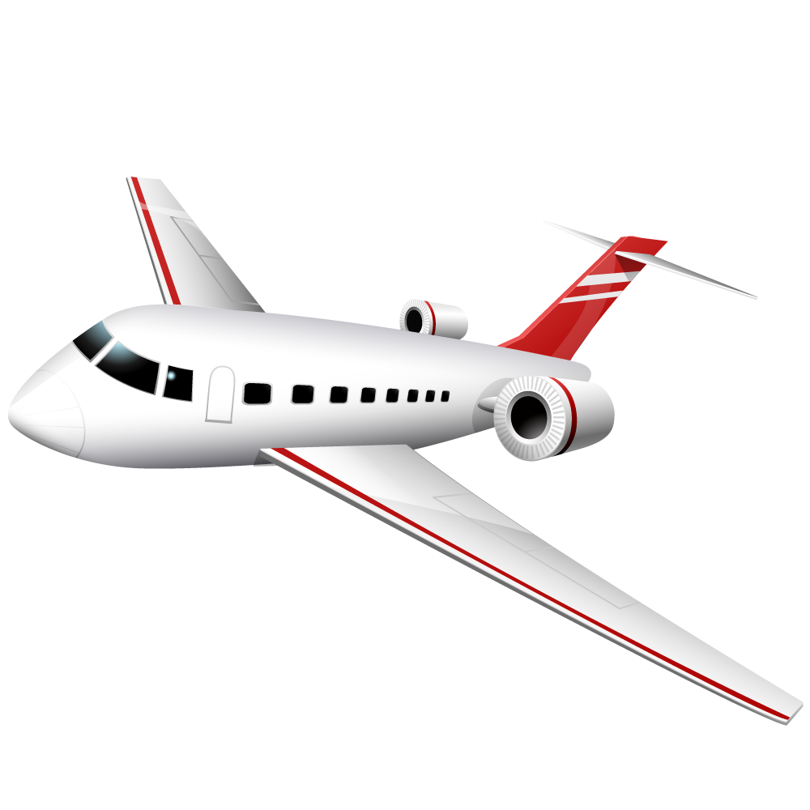

<ion-content>
  <!-- con il continue -> mi porto alle tabs -->
  <ion-slides pager="true" [options]="slideOpts">
    <ion-slide class="slide1">
      <h1>Benvenuto</h1>
      <h1>Welcome</h1>
      <h1>Willkommen</h1>
    </ion-slide>
    <ion-slide class="slide2">
      <h1>Do you like travelling?</h1>
    </ion-slide>
    <ion-slide class="slide3">
      
      <h1>What are you waiting for?</h1>
      <h1>Enjoy!</h1>
      <ion-button fill="clear" (click)="goTabs()"
        >Continue <ion-icon slot="end" name="arrow-forward"></ion-icon
      ></ion-button>
    </ion-slide>
  </ion-slides>
</ion-content>
